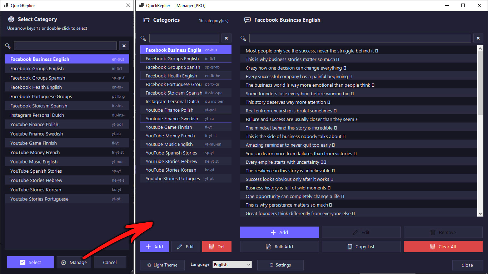
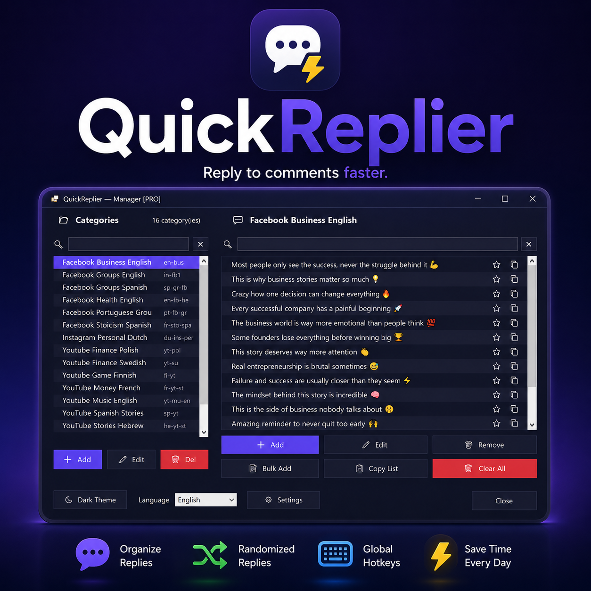

QuickReplier vive en la bandeja de Windows. Presiona tu atajo y coloca una respuesta lista directamente en el campo de comentarios activo — en Facebook, Instagram, YouTube o donde sea que escribas.

Ya respondes comentarios todo el día. QuickReplier solo elimina la parte de reescribir.
Agrupa respuestas en categorías por plataforma, tema e idioma, para que el tono correcto esté siempre a un clic.
Cada pulsación elige una respuesta diferente de la categoría, para que nada parezca copiado y pegado entre comentarios.
Un atajo funciona en todas partes — pestañas del navegador, apps de escritorio, cualquier campo de texto donde puedas colocar el cursor.
Lo que antes eran minutos reescribiendo por comentario se convierte en una sola pulsación de tecla, comentario tras comentario.
Nómbrala por plataforma, tema e idioma — por ejemplo "Facebook Negocios Español".
Escribe o carga en bloque tantas respuestas listas como quieras dentro de esa categoría.
Elige un atajo global y selecciona qué categoría está activa en este momento.
QuickReplier elige una respuesta al azar de la categoría activa y la escribe por ti.

Descubre cómo funciona QuickReplier en 37 segundos, luego sigue el tutorial completo para empezar — y descárgalo gratis desde Microsoft Store.
Tráiler — 37 segundos
Tutorial Completo — 16 minutos
La versión gratuita incluye 3 categorías y 15 respuestas cada una · Sin cuenta requerida · Windows 10/11
Sí. El atajo escribe tu respuesta en el campo de texto que tenga el foco en pantalla en ese momento — una caja de comentarios en el navegador, una app de escritorio, una ventana de chat, donde sea que puedas colocar el cursor.
No. Tus categorías y respuestas se guardan localmente en tu computadora. QuickReplier no sube ni lee ese contenido.
Gratis incluye 3 categorías con hasta 15 respuestas cada una. Full elimina esos límites por completo — categorías ilimitadas, respuestas ilimitadas en cada una.
La versión Full se desbloquea mediante una licencia comprada dentro del listado de QuickReplier en Microsoft Store.
QuickReplier funciona en Windows 10 y Windows 11.
Instala QuickReplier, define tu atajo, y deja que se encargue de reescribir.
Obtener QuickReplier en Microsoft Store